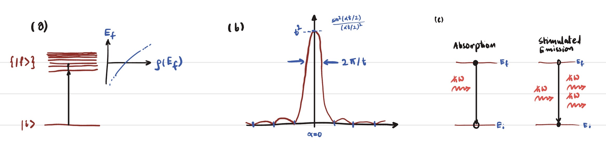
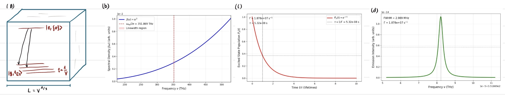
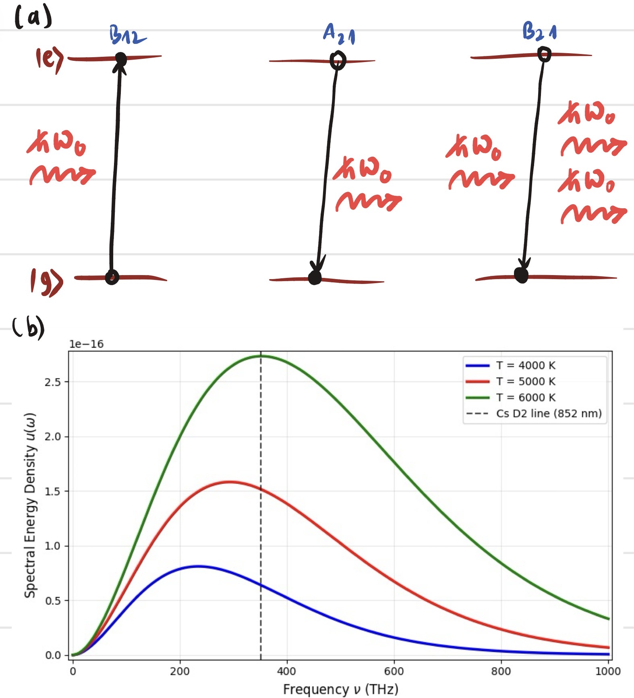

Introduction and Overview
These notes walk through the quantum theory of atom–light interaction from three angles: time-dependent perturbation theory, the Wigner–Weisskopf treatment of spontaneous emission, and the Einstein rate equations. The goal is to understand the origin of the Einstein $A$ and $B$ coefficients, which describe the rates of spontaneous emission, stimulated emission, and absorption. These coefficients are fundamental to the theory of lasers, masers, and other light–matter interactions.
We discuss how irreversible behavior -spontaneous emission, line broadening, and decoherence -can emerge from the reversible Hamiltonian dynamics of an atom coupled to many radiation modes. That thing is one of the deepest ideas in quantum optics and spectroscopy.
I assume the reader knows the basics of non-relativistic quantum mechanics: Hilbert spaces, bras and kets, unitary evolution, perturbation theory, and the quantization of the harmonic oscillator. Some familiarity with classical electrodynamics and the mode expansion of the free field helps, but I also r eview those ideas briefly.
1. Time-Dependent Perturbation Theory
1.1 The Schrödinger, Heisenberg, and Interaction Pictures
Consider a quantum system whose Hamiltonian splits into a time-independent "free" part $\hat{H}_0$ and a time-dependent "perturbation" $\hat{V}(t)$: \begin{equation} \hat{H}(t) = \hat{H}_0 + \hat{V}(t). \label{eq:totalH} \end{equation} We assume that the eigenvalue problem for $\hat{H}_0$ is fully solved: \begin{equation} \hat{H}_0 | n \rangle = E_n | n \rangle, \qquad \langle n | m \rangle = \delta_{nm}, \end{equation} and that the set $\{ | n \rangle \}$ forms a complete orthonormal basis.
In the Schrödinger picture, state vectors carry all time dependence: \begin{equation} i\hbar \frac{\mathrm{d}}{\mathrm{d} t} | \psi_{\mathrm{S}}(t) \rangle = \hat{H}(t) | \psi_{\mathrm{S}}(t) \rangle. \label{eq:SE} \end{equation} The formal solution is $| \psi_{\mathrm{S}}(t) \rangle = \hat{U}(t,t_0) | \psi_{\mathrm{S}}(t_0) \rangle$, where the time-evolution operator $\hat{U}(t,t_0)$ satisfies the same Schrödinger equation with initial condition $\hat{U}(t_0,t_0)=\mathbb{1}$.
In the interaction picture (also called the Dirac picture), we factor out the rapid evolution generated by $\hat{H}_0$, which is assumed to be exactly solvable. Define the interaction-picture state vector \begin{equation} | \psi_{\mathrm{I}}(t) \rangle = e^{i\hat{H}_0 t/\hbar} | \psi_{\mathrm{S}}(t) \rangle. \label{eq:IPstate} \end{equation} Substituting into (\ref{eq:SE}) gives the dynamical equation in the interaction picture: \begin{equation} i\hbar \frac{\mathrm{d}}{\mathrm{d} t} | \psi_{\mathrm{I}}(t) \rangle = \hat{V}_{\mathrm{I}}(t) | \psi_{\mathrm{I}}(t) \rangle, \label{eq:IPSchrodinger} \end{equation} where the interaction-picture perturbation is \begin{equation} \hat{V}_{\mathrm{I}}(t) = e^{i\hat{H}_0 t/\hbar} \, \hat{V}(t) \, e^{-i\hat{H}_0 t/\hbar}. \label{eq:VIP} \end{equation} This transformation is advantageous because it removes the trivial free evolution; any change in $| \psi_{\mathrm{I}}(t) \rangle$ is directly attributable to the perturbation.
1.2 Expansion in the Unperturbed Basis
Expand the interaction-picture state in the eigenbasis of $\hat{H}_0$: \begin{equation} | \psi_{\mathrm{I}}(t) \rangle = \sum_n c_n(t) | n \rangle. \label{eq:expansion} \end{equation} The coefficients $c_n(t)$ are the probability amplitudes for finding the system in the unperturbed eigenstate $| n \rangle$. Projecting (\ref{eq:IPSchrodinger}) onto $\langle f |$ and inserting the completeness relation $\sum_n | n \rangle \langle n | = \mathbb{1}$ yields an exact set of coupled differential equations: \begin{equation} i\hbar \, \dot{c}_f(t) = \sum_n \langle f | \hat{V}_{\mathrm{I}}(t) | n \rangle \, c_n(t). \label{eq:coupled} \end{equation} Using (\ref{eq:VIP}) and the eigenvalue property, \begin{equation} \langle f | \hat{V}_{\mathrm{I}}(t) | n \rangle = e^{iE_f t/\hbar} \langle f | \hat{V}(t) | n \rangle e^{-iE_n t/\hbar} = \langle f | \hat{V}(t) | n \rangle \, e^{i\omega_{fn} t}, \end{equation} where we have introduced the transition (Bohr) frequency \begin{equation} \omega_{fn} \equiv \frac{E_f - E_n}{\hbar}. \label{eq:omega} \end{equation} Equation (\ref{eq:coupled}) becomes \begin{equation} i\hbar \, \dot{c}_f(t) = \sum_n V_{fn}(t) \, e^{i\omega_{fn} t} \, c_n(t), \label{eq:coupled2} \end{equation} with the shorthand $V_{fn}(t) \equiv \langle f | \hat{V}(t) | n \rangle$. No approximation has been made up to this point; (\ref{eq:coupled2}) is fully equivalent to the original Schrödinger equation.
1.3 Perturbative Expansion and Dyson Series
When $\hat{V}(t)$ is "small" in some appropriate sense, we solve (\ref{eq:coupled2}) iteratively. Write the amplitude as a formal power series: \begin{equation} c_n(t) = c_n^{(0)}(t) + c_n^{(1)}(t) + c_n^{(2)}(t) + \cdots , \end{equation} where the superscript $(k)$ denotes the order in $\hat{V}$. The initial condition at $t=t_0$ is that the system is prepared in a definite eigenstate $| i \rangle$: \begin{equation} c_n(t_0) = \delta_{ni}. \end{equation} The zero-order solution is therefore constant in time: $c_n^{(0)}(t) = \delta_{ni}$. Inserting this into the right-hand side of (\ref{eq:coupled2}) and integrating gives the first-order correction for $f \neq i$: \begin{equation} c_f^{(1)}(t) = -\frac{i}{\hbar} \int_{t_0}^{t} \mathrm{d} t_1 \, V_{fi}(t_1) \, e^{i\omega_{fi} t_1}, \qquad (f \neq i). \label{eq:firstorder} \end{equation} The first-order transition probability from $| i \rangle$ to $| f \rangle$ is \begin{equation} P_{i \to f}^{(1)}(t) = |c_f^{(1)}(t)|^2. \end{equation} Continuing the iteration, the second-order amplitude involves a sum over virtual intermediate states $| m \rangle$: \begin{equation} c_f^{(2)}(t) = \left(-\frac{i}{\hbar}\right)^2 \sum_m \int_{t_0}^{t} \mathrm{d} t_2 \int_{t_0}^{t_2} \mathrm{d} t_1 \, V_{fm}(t_2) e^{i\omega_{fm}t_2} \, V_{mi}(t_1) e^{i\omega_{mi}t_1}. \label{eq:secondorder} \end{equation} This is the foundation for two-photon processes, Raman transitions, and other nonlinear optical phenomena. The nested time ordering is a signature of the Dyson series expansion of the time-evolution operator.
1.4 Harmonic Perturbation and the Rotating Wave Approximation
In atom–light interactions, the dominant perturbation is a harmonic (sinusoidal) time dependence arising from the oscillating electric field of the radiation. We write \begin{equation} \hat{V}(t) = \hat{W} e^{-i\omega t} + \hat{W}^\dagger e^{i\omega t}, \label{eq:harmonicV} \end{equation} where $\hat{W}$ is a time-independent operator and $\omega > 0$ is the driving frequency. For the electric dipole interaction, $\hat{W} = -\mathbf{d} \cdot \mathbf{E}_0 / 2$, where $\mathbf{d} = e\mathbf{r}$ is the atomic dipole operator and $\mathbf{E}_0$ is the field amplitude.
The matrix element is \begin{equation} V_{fi}(t) = W_{fi} e^{-i\omega t} + (W^\dagger)_{fi} e^{i\omega t}, \end{equation} with $W_{fi} \equiv \langle f | \hat{W} | i \rangle$ and $(W^\dagger)_{fi} = \langle f | \hat{W}^\dagger | i \rangle = (\langle i | \hat{W} | f \rangle)^* = W_{if}^*$.
Substituting into (\ref{eq:firstorder}) and performing the elementary time integration: \begin{align} c_f^{(1)}(t) &= -\frac{i}{\hbar} W_{fi} \int_{t_0}^{t} \mathrm{d} t_1 \, e^{i(\omega_{fi} - \omega)t_1} -\frac{i}{\hbar} (W^\dagger)_{fi} \int_{t_0}^{t} \mathrm{d} t_1 \, e^{i(\omega_{fi} + \omega)t_1} \nonumber \\ &= -\frac{W_{fi}}{\hbar} \frac{e^{i(\omega_{fi}-\omega)t} - e^{i(\omega_{fi}-\omega)t_0}}{\omega_{fi}-\omega} -\frac{(W^\dagger)_{fi}}{\hbar} \frac{e^{i(\omega_{fi}+\omega)t} - e^{i(\omega_{fi}+\omega)t_0}}{\omega_{fi}+\omega}. \label{eq:cft_harmonic} \end{align}
Consider the case where $| f \rangle$ lies above $| i \rangle$ in energy, so $E_f > E_i$ and $\omega_{fi} > 0$. This corresponds to absorption. When the driving frequency $\omega$ is close to resonance, $\omega \approx \omega_{fi}$, the first term in (\ref{eq:cft_harmonic}) has a small denominator $\omega_{fi} - \omega$ and becomes large. The second term has a denominator $\omega_{fi} + \omega \approx 2\omega$, which is always large and non-resonant; its contribution oscillates rapidly and averages to zero on timescales long compared to the optical period. Neglecting this counter-rotating term constitutes the rotating wave approximation (RWA), which is ubiquitous in quantum optics and is an excellent approximation for near-resonant interactions at optical frequencies.
For emission ($E_f < E_i$), the roles are reversed: $\omega_{fi} < 0$, and the term with $e^{i(\omega_{fi}+\omega)t}$ becomes resonant. Setting $t_0=0$ for convenience, the first-order transition amplitude in the RWA reads \begin{align} c_f^{(1)}(t) &\approx -\frac{W_{fi}}{\hbar} \frac{e^{i(\omega_{fi}-\omega)t} - 1}{\omega_{fi}-\omega} \qquad (\text{absorption, } \omega_{fi}>0), \label{eq:cft_abs} \\ c_f^{(1)}(t) &\approx -\frac{(W^\dagger)_{fi}}{\hbar} \frac{e^{i(\omega_{fi}+\omega)t} - 1}{\omega_{fi}+\omega} \qquad (\text{emission, } \omega_{fi}<0). \label{eq:cft_em} \end{align}
The transition probability is \begin{equation} P_{i\to f}(t) = \frac{|W_{fi}|^2}{\hbar^2} \, \frac{\sin^2\!\big[(\omega_{fi} \mp \omega)t/2\big]}{\big[(\omega_{fi} \mp \omega)/2\big]^2}, \label{eq:prob} \end{equation} where the minus (plus) sign corresponds to absorption (emission), and we note that $|W_{fi}|^2 = |(W^\dagger)_{fi}|^2 = |W_{if}^*|^2 = |W_{if}|^2$.
1.5 Transition Rate to a Continuum: Fermi's Golden Rule
The function \begin{equation} F(\alpha, t) \equiv \frac{\sin^2(\alpha t/2)}{(\alpha/2)^2} \end{equation} appearing in (\ref{eq:prob}) is sharply peaked at $\alpha = 0$ with a width $\sim 2\pi/t$ and a height $t^2$. Its integral over $\alpha$ is exactly $2\pi t$. For large $t$ (compared to the inverse detuning of any structure in the continuum), $F(\alpha, t)$ behaves as a representation of the Dirac delta function: \begin{equation} \frac{\sin^2(\alpha t/2)}{(\alpha/2)^2} \;\longrightarrow\; 2\pi t \, \delta(\alpha) \quad \text{as } t \to \infty. \end{equation}
In realistic atomic systems, the final states form a continuum or quasi-continuum (e.g., the electromagnetic modes of free space). We therefore sum (or integrate) the transition probability over a set of final states with a density of states $\rho(E_f)$. The transition rate $\Gamma_{i\to f}$ is the probability per unit time: \begin{align} \Gamma_{i\to f} &= \frac{\mathrm{d}}{\mathrm{d} t} \int \mathrm{d} E_f \, \rho(E_f) \, P_{i\to f}(t) \nonumber \\ &= \int \mathrm{d} E_f \, \rho(E_f) \, \frac{|W_{fi}|^2}{\hbar^2} \, \frac{\sin^2[(\omega_{fi}\mp\omega)t/2]}{[(\omega_{fi}\mp\omega)/2]^2} \frac{1}{t} \nonumber \\ &\approx \frac{2\pi}{\hbar} \int \mathrm{d} E_f \, \rho(E_f) \, |W_{fi}|^2 \, \delta(E_f - E_i \mp \hbar\omega). \end{align} Carrying out the integral yields Fermi's Golden Rule: \begin{equation} \boxed{\Gamma_{i\to f} = \frac{2\pi}{\hbar} \, |W_{fi}|^2 \, \rho(E_f) \Big|_{E_f = E_i \pm \hbar\omega}}. \label{eq:FGR} \end{equation} This is one of the most important results in time-dependent perturbation theory. It states that the transition rate is determined by the square of the coupling matrix element and the density of final states evaluated at the resonant energy. The derivation requires (i) that the matrix element varies slowly with energy, (ii) that the density of states is smooth on the scale of the linewidth, and (iii) that $t$ is long enough for the delta-function limit to hold, but short enough that the first-order probability remains small ($P_{i\to f} \ll 1$).

coupled by a perturbation V(t) to a continuum of final states {|f>}. The density of states rho(E_f) is shown schematically. The function sin^2(alpha t/2)/(alpha/2)^2 is plotted versus alpha for increasing values of t, illustrating its approach to a delta function. Energy level diagram showing absorption (hbar omega approx E_f - E_i) and stimulated emission (hbar omega approx E_i - E_f)." style="width: 100%; margin: 16px 0 20px;" />Figure 1: (a) A discrete state $| i \rangle$ coupled by a perturbation $\hat{V}(t)$ (black upward arrow) to a continuum of final states $\{ | f \rangle \}$. The density of states $\rho(E_f)$ is shown by blue curve. (b) The function $\sin^2(\alpha t/2)/(\alpha/2)^2$ plotted versus $\alpha$ for a fixed $t$, for higher values of $t$ itb approach to a delta function. (c) Energy level diagram showing absorption ($\hbar\omega \approx E_f - E_i$) and stimulated emission ($\hbar\omega \approx E_i - E_f$).
2. Wigner–Weisskopf Theory of Spontaneous Emission
2.1 Motivation and Historical Context
Fermi's Golden Rule, as derived above, gives the transition rate induced by an external classical field or by a field that already contains photons (stimulated processes). It does not account for spontaneous emission: the experimentally observed fact that an excited atom decays to its ground state even in the complete absence of any applied field. This phenomenon was explained only after the quantization of the electromagnetic field. In 1930, Eugene Wigner and Weisskopf published a seminal paper that provided the first fully quantum-mechanical treatment of spontaneous emission, demonstrating that it arises from the coupling of the atom to the vacuum fluctuations of the quantized radiation field.
2.2 The Quantized Electromagnetic Field
We consider the electromagnetic field in a cubic quantization volume $V = L^3$ with periodic boundary conditions. The classical vector potential $\mathbf{A}(\mathbf{r}, t)$ in the Coulomb gauge ($\nabla \cdot \mathbf{A} = 0$, scalar potential $\phi=0$) is expanded in plane-wave modes: \begin{equation} \mathbf{A}(\mathbf{r}, t) = \sum_{\mathbf{k}, \lambda} \sqrt{\frac{\hbar}{2\varepsilon_0 V \omega_k}} \, \left[ \boldsymbol{\epsilon}_{\mathbf{k}\lambda} \, a_{\mathbf{k}\lambda}(t) \, e^{i\mathbf{k}\cdot\mathbf{r}} + \boldsymbol{\epsilon}_{\mathbf{k}\lambda}^* \, a_{\mathbf{k}\lambda}^\dagger(t) \, e^{-i\mathbf{k}\cdot\mathbf{r}} \right], \end{equation} where $\omega_k = c|\mathbf{k}|$, $\lambda = 1,2$ labels two orthogonal polarization unit vectors $\boldsymbol{\epsilon}_{\mathbf{k}\lambda}$ satisfying $\mathbf{k} \cdot \boldsymbol{\epsilon}_{\mathbf{k}\lambda} = 0$, and the mode functions are normalized by the volume $V$.
Quantization promotes the Fourier amplitudes to bosonic annihilation and creation operators satisfying the canonical commutation relations: \begin{equation} [\hat{a}_{\mathbf{k}\lambda}, \hat{a}_{\mathbf{k}'\lambda'}^\dagger] = \delta_{\mathbf{k}\mathbf{k}'} \delta_{\lambda\lambda'}, \qquad [\hat{a}_{\mathbf{k}\lambda}, \hat{a}_{\mathbf{k}'\lambda'}] = [\hat{a}_{\mathbf{k}\lambda}^\dagger, \hat{a}_{\mathbf{k}'\lambda'}^\dagger] = 0. \label{eq:boson_comm} \end{equation} The free field Hamiltonian in the Schrödinger picture is \begin{equation} \hat{H}_F = \sum_{\mathbf{k},\lambda} \hbar\omega_k \, \hat{a}_{\mathbf{k}\lambda}^\dagger \hat{a}_{\mathbf{k}\lambda}, \end{equation} where we have dropped the infinite zero-point energy $\sum_{\mathbf{k}\lambda} \frac{1}{2}\hbar\omega_k$, as it does not affect transition rates (though it does contribute to the Lamb shift). The electric field operator in the Schrödinger picture is obtained from $\mathbf{E} = -\partial\mathbf{A}/\partial t$ (since $\phi=0$ in the Coulomb gauge): \begin{equation} \hat{\mathbf{E}}(\mathbf{r}) = i \sum_{\mathbf{k},\lambda} \sqrt{\frac{\hbar\omega_k}{2\varepsilon_0 V}} \, \left[ \boldsymbol{\epsilon}_{\mathbf{k}\lambda} \, \hat{a}_{\mathbf{k}\lambda} \, e^{i\mathbf{k}\cdot\mathbf{r}} - \boldsymbol{\epsilon}_{\mathbf{k}\lambda}^* \, \hat{a}_{\mathbf{k}\lambda}^\dagger \, e^{-i\mathbf{k}\cdot\mathbf{r}} \right]. \label{eq:Efield} \end{equation}
2.3 The Atom–Field Interaction Hamiltonian
We model the atom as a two-level system with ground state $| g \rangle$ (energy $E_g$) and excited state $| e \rangle$ (energy $E_e$). The free atomic Hamiltonian is \begin{equation} \hat{H}_A = E_g | g \rangle \langle g | + E_e | e \rangle \langle e |. \end{equation} The atom is taken to be localized at the origin $\mathbf{r} = 0$; this is an excellent approximation in the optical regime where the atomic wavefunction extent (Bohr radius $a_0 \sim 0.05$ nm) is far smaller than the optical wavelength ($\lambda \sim 500$ nm). The interaction Hamiltonian in the electric dipole approximation is \begin{equation} \hat{H}_{\mathrm{int}} = -\hat{\mathbf{d}} \cdot \hat{\mathbf{E}}(0), \end{equation} where $\hat{\mathbf{d}} = e\,\hat{\mathbf{r}}$ is the atomic electric dipole operator. Since $\hat{\mathbf{d}}$ is odd under parity, its diagonal matrix elements vanish: $\langle g | \hat{\mathbf{d}} | g \rangle = \langle e | \hat{\mathbf{d}} | e \rangle = 0$. We define the transition dipole matrix element \begin{equation} \mathbf{d}_{eg} = \langle e | \hat{\mathbf{d}} | g \rangle, \qquad \mathbf{d}_{ge} = \langle g | \hat{\mathbf{d}} | e \rangle = \mathbf{d}_{eg}^*. \end{equation} Introducing the atomic transition operators \begin{equation} \hat{\sigma}_+ = | e \rangle \langle g |, \qquad \hat{\sigma}_- = | g \rangle \langle e |, \qquad \hat{\sigma}_z = | e \rangle \langle e | - | g \rangle \langle g |, \end{equation} the dipole operator can be written as \begin{equation} \hat{\mathbf{d}} = \mathbf{d}_{eg} \hat{\sigma}_+ + \mathbf{d}_{ge} \hat{\sigma}_-. \end{equation}
Substituting the field expansion (\ref{eq:Efield}) into $\hat{H}_{\mathrm{int}}$ gives terms of the form $\hat{\sigma}_+ \hat{a}_{\mathbf{k}\lambda}$, $\hat{\sigma}_+ \hat{a}_{\mathbf{k}\lambda}^\dagger$, $\hat{\sigma}_- \hat{a}_{\mathbf{k}\lambda}$, and $\hat{\sigma}_- \hat{a}_{\mathbf{k}\lambda}^\dagger$. The terms $\hat{\sigma}_+ \hat{a}_{\mathbf{k}\lambda}^\dagger$ and $\hat{\sigma}_- \hat{a}_{\mathbf{k}\lambda}$ describe processes where the atom goes up (down) while simultaneously creating (destroying) a photon; these violate energy conservation by approximately $2\hbar\omega_{eg}$ and are highly non-resonant. In the rotating wave approximation (RWA), we drop these counter-rotating terms and retain only the energy-conserving contributions: \begin{equation} \hat{H}_{\mathrm{int}}^{\mathrm{(RWA)}} = -i \sum_{\mathbf{k},\lambda} \sqrt{\frac{\hbar\omega_k}{2\varepsilon_0 V}} \, \left[ (\boldsymbol{\epsilon}_{\mathbf{k}\lambda} \cdot \mathbf{d}_{eg}) \, \hat{\sigma}_+ \hat{a}_{\mathbf{k}\lambda} - (\boldsymbol{\epsilon}_{\mathbf{k}\lambda}^* \cdot \mathbf{d}_{ge}) \, \hat{\sigma}_- \hat{a}_{\mathbf{k}\lambda}^\dagger \right]. \label{eq:Hint_RWA} \end{equation} The total Hamiltonian in the RWA is thus \begin{equation} \hat{H} = \hat{H}_A + \hat{H}_F + \hat{H}_{\mathrm{int}}^{\mathrm{(RWA)}}. \label{eq:totalH_RWA} \end{equation}
2.4 Single-Excitation Subspace and State Vector Ansatz
We consider the situation where the atom is initially prepared in the excited state $| e \rangle$ and the radiation field is in the vacuum state $| \{0\} \rangle$. The total system has exactly one quantum of excitation. Since $\hat{H}_{\mathrm{int}}^{\mathrm{(RWA)}}$ either creates a photon and de-excites the atom, or destroys a photon and excites the atom, the dynamics is confined to the single-excitation subspace spanned by: \begin{align} | e, \{0\} \rangle &\equiv | e \rangle \otimes | 0_{\mathbf{k}_1\lambda_1}, 0_{\mathbf{k}_2\lambda_2}, \dots \rangle, \\ | g, 1_{\mathbf{k}\lambda} \rangle &\equiv | g \rangle \otimes | 0, \dots, 1_{\mathbf{k}\lambda}, \dots \rangle. \end{align} The most general state vector in this subspace is \begin{equation} | \psi(t) \rangle = c_e(t) | e,\{0\} \rangle + \sum_{\mathbf{k},\lambda} c_{g,\mathbf{k}\lambda}(t) | g, 1_{\mathbf{k}\lambda} \rangle. \label{eq:ansatz} \end{equation} Normalization requires \begin{equation} |c_e(t)|^2 + \sum_{\mathbf{k},\lambda} |c_{g,\mathbf{k}\lambda}(t)|^2 = 1. \end{equation} The amplitude $c_e(t)$ is the probability amplitude for the atom to be still excited with no photons emitted; $c_{g,\mathbf{k}\lambda}(t)$ is the amplitude for the atom to have decayed to the ground state while emitting a photon into the mode $(\mathbf{k},\lambda)$.
2.5 Equations of Motion
Substitute the ansatz (\ref{eq:ansatz}) into the Schrödinger equation $i\hbar\,\partial_t | \psi \rangle = \hat{H} | \psi \rangle$ with $\hat{H}$ given by (\ref{eq:totalH_RWA}). Projecting onto the basis states yields a system of coupled linear differential equations: \begin{align} i\hbar\,\dot{c}_e(t) &= E_e\,c_e(t) + \sum_{\mathbf{k},\lambda} g_{\mathbf{k}\lambda}^* \, c_{g,\mathbf{k}\lambda}(t), \label{eq:coupled_e} \\ i\hbar\,\dot{c}_{g,\mathbf{k}\lambda}(t) &= (E_g + \hbar\omega_k)\,c_{g,\mathbf{k}\lambda}(t) + g_{\mathbf{k}\lambda}\,c_e(t), \label{eq:coupled_g} \end{align} where we have defined the atom–field coupling constant \begin{equation} g_{\mathbf{k}\lambda} = \sqrt{\frac{\hbar\omega_k}{2\varepsilon_0 V}} \, (\boldsymbol{\epsilon}_{\mathbf{k}\lambda} \cdot \mathbf{d}_{ge}). \label{eq:gk} \end{equation}
To eliminate the explicit free-evolution phases, we define slowly varying amplitudes: \begin{equation} c_e(t) = \tilde{c}_e(t)\,e^{-iE_e t/\hbar}, \qquad c_{g,\mathbf{k}\lambda}(t) = \tilde{c}_{g,\mathbf{k}\lambda}(t)\,e^{-i(E_g + \hbar\omega_k)t/\hbar}. \end{equation} Substituting into (\ref{eq:coupled_e})–(\ref{eq:coupled_g}) gives \begin{align} i\hbar\,\dot{\tilde{c}}_e(t) &= \sum_{\mathbf{k},\lambda} g_{\mathbf{k}\lambda}^* \, \tilde{c}_{g,\mathbf{k}\lambda}(t)\,e^{-i(\omega_k - \omega_{eg})t}, \label{eq:slow_e} \\ i\hbar\,\dot{\tilde{c}}_{g,\mathbf{k}\lambda}(t) &= g_{\mathbf{k}\lambda}\,\tilde{c}_e(t)\,e^{i(\omega_k - \omega_{eg})t}, \label{eq:slow_g} \end{align} where $\omega_{eg} \equiv (E_e - E_g)/\hbar > 0$ is the atomic transition frequency.
2.6 The Integro-Differential Equation for $c_e(t)$
We assume the field starts in the vacuum: $c_{g,\mathbf{k}\lambda}(0) = 0$ for all modes. Formally integrate (\ref{eq:slow_g}) from $0$ to $t$: \begin{equation} \tilde{c}_{g,\mathbf{k}\lambda}(t) = -\frac{i}{\hbar}\,g_{\mathbf{k}\lambda} \int_0^t \mathrm{d} t' \, \tilde{c}_e(t')\,e^{i(\omega_k - \omega_{eg})t'}. \label{eq:formal_g} \end{equation} Insert this into (\ref{eq:slow_e}): \begin{equation} \dot{\tilde{c}}_e(t) = -\frac{1}{\hbar^2} \sum_{\mathbf{k},\lambda} |g_{\mathbf{k}\lambda}|^2 \int_0^t \mathrm{d} t' \, \tilde{c}_e(t')\,e^{-i(\omega_k - \omega_{eg})(t - t')}. \label{eq:IDE} \end{equation} This is an exact integro-differential equation for the excited-state amplitude. The kernel \begin{equation} K(t - t') \equiv \sum_{\mathbf{k},\lambda} |g_{\mathbf{k}\lambda}|^2 \, e^{-i(\omega_k - \omega_{eg})(t - t')} \label{eq:kernel} \end{equation} is the memory kernel of the electromagnetic reservoir. It encodes the correlation time of the vacuum fluctuations as seen by the atom.
2.7 Continuum Limit and the Spectral Density
In the large-volume limit, the sum over modes becomes an integral. Using the prescription \begin{equation} \sum_{\mathbf{k}} \;\longrightarrow\; \frac{V}{(2\pi)^3} \int \mathrm{d}^3 k, \end{equation} and converting to spherical coordinates in $\mathbf{k}$-space with $\mathrm{d}^3k = k^2 \mathrm{d} k \mathrm{d}\Omega$, we have $k = \omega_k / c$ and $\mathrm{d} k = \mathrm{d}\omega_k / c$. The polarization sum for a given direction $\hat{k}$ is evaluated by noting that the two polarization vectors $\boldsymbol{\epsilon}_{\mathbf{k}\lambda}$ and $\hat{k}$ form an orthonormal triad: \begin{equation} \sum_{\lambda=1,2} |\boldsymbol{\epsilon}_{\mathbf{k}\lambda} \cdot \mathbf{d}_{ge}|^2 = |\mathbf{d}_{ge}|^2 - |\hat{k}\cdot\mathbf{d}_{ge}|^2. \end{equation} The angular integral over the unit sphere gives \begin{equation} \int \mathrm{d}\Omega \, (|\mathbf{d}_{ge}|^2 - |\hat{k}\cdot\mathbf{d}_{ge}|^2) = 4\pi |\mathbf{d}_{ge}|^2 - \frac{4\pi}{3}|\mathbf{d}_{ge}|^2 = \frac{8\pi}{3} |\mathbf{d}_{ge}|^2. \end{equation} Putting everything together, the kernel becomes \begin{align} K(\tau) &= \frac{V}{(2\pi)^3} \cdot \frac{\hbar}{2\varepsilon_0 V} \cdot \frac{1}{c^3} \int_0^\infty \mathrm{d}\omega_k \, \omega_k^3 \, \frac{8\pi}{3} |\mathbf{d}_{ge}|^2 \, e^{-i(\omega_k - \omega_{eg})\tau} \nonumber \\ &= \int_0^\infty \mathrm{d}\omega_k \, J(\omega_k) \, e^{-i(\omega_k - \omega_{eg})\tau}, \label{eq:kernel_integral} \end{align} where we have introduced the spectral density of the electromagnetic reservoir: \begin{equation} \boxed{J(\omega) = \frac{\omega^3 |\mathbf{d}_{eg}|^2}{6\pi^2 \varepsilon_0 \hbar c^3}}. \label{eq:Jomega} \end{equation} The spectral density $J(\omega)$ quantifies the strength of the coupling of the atom to the electromagnetic modes at frequency $\omega$. Its $\omega^3$ dependence is characteristic of the dipole coupling in three-dimensional free space and is ultimately responsible for the $\omega_{eg}^3$ scaling of the spontaneous emission rate.
2.8 The Wigner–Weisskopf (Markov) Approximation
The integro-differential equation (\ref{eq:IDE}) is non-Markovian: the derivative of $\tilde{c}_e(t)$ depends on the entire history of $\tilde{c}_e(t')$ for $0 \le t' \le t$. The memory kernel $K(\tau)$ decays on a timescale $\tau_c$, the correlation time of the vacuum. For free-space electromagnetic modes, $\tau_c$ is extremely short — on the order of the optical period, $\tau_c \sim 1/\omega_{eg} \sim 10^{-15}$ s. By contrast, the excited-state amplitude varies on the timescale of the spontaneous emission lifetime, $\tau_{\text{sp}} \sim 1/\Gamma \sim 10^{-9}$ s for typical optical transitions. Since $\tau_c \ll \tau_{\text{sp}}$, the system is in the Markovian regime: the reservoir has no memory on the timescales over which the atomic state evolves appreciably.
In this regime, we can make the following approximations, collectively referred to as the Wigner–Weisskopf approximation:
- Since the kernel is sharply peaked around $\tau = 0$, the integral in (\ref{eq:IDE}) is dominated by $t' \approx t$. We approximate $\tilde{c}_e(t') \approx \tilde{c}_e(t)$ and pull it out of the integral.
- Extend the lower limit of the $\omega_k$ integral to $-\infty$ (which is justified because $J(\omega)$ is highly peaked at $\omega_{eg}$ and $\omega_{eg}$ is far from zero). The remaining time integral yields: \begin{equation} \int_0^t \mathrm{d} t' \, e^{-i(\omega_k - \omega_{eg})(t - t')} \approx \int_0^\infty \mathrm{d}\tau \, e^{-i(\omega_k - \omega_{eg})\tau} = \pi\,\delta(\omega_k - \omega_{eg}) - i\,\mathcal{P}\frac{1}{\omega_k - \omega_{eg}}, \end{equation} where $\mathcal{P}$ denotes the Cauchy principal value.
- We also make the pole approximation: the spectral density $J(\omega)$ is evaluated at the atomic resonance frequency, $J(\omega) \approx J(\omega_{eg})$, since it varies slowly over the linewidth of the transition.
With these approximations, (\ref{eq:IDE}) reduces to a simple first-order differential equation: \begin{equation} \dot{\tilde{c}}_e(t) = -\left(\frac{\Gamma}{2} + i\Delta\right) \tilde{c}_e(t), \label{eq:decay_eq} \end{equation} where the spontaneous emission rate (decay constant) is \begin{equation} \boxed{\Gamma \equiv \frac{2\pi}{\hbar}\, J(\omega_{eg}) = \frac{\omega_{eg}^3 |\mathbf{d}_{eg}|^2}{3\pi \varepsilon_0 \hbar c^3}}, \label{eq:Gamma} \end{equation} and the Lamb shift (frequency renormalization) is \begin{equation} \Delta \equiv \frac{1}{\hbar}\,\mathcal{P}\int_0^\infty \mathrm{d}\omega_k \, \frac{J(\omega_k)}{\omega_k - \omega_{eg}}. \label{eq:Lamb} \end{equation}
Equation (\ref{eq:decay_eq}) integrates immediately to \begin{equation} \tilde{c}_e(t) = \tilde{c}_e(0)\,e^{-\Gamma t/2}\,e^{-i\Delta t}, \end{equation} and the full Schrödinger-picture amplitude is \begin{equation} c_e(t) = e^{-iE_e t/\hbar}\,\tilde{c}_e(t) = c_e(0)\,e^{-i(E_e + \hbar\Delta)t/\hbar}\,e^{-\Gamma t/2}. \end{equation} The probability for the atom to remain in the excited state decays exponentially: \begin{equation} \boxed{P_e(t) = |c_e(t)|^2 = P_e(0)\,e^{-\Gamma t}}. \label{eq:exp_decay} \end{equation}
2.9 The Emitted Photon Spectrum and Natural Linewidth
The amplitude for finding a photon in mode $(\mathbf{k},\lambda)$ at long times ($t \gg 1/\Gamma$) follows from (\ref{eq:formal_g}) with the exponential form of $\tilde{c}_e(t)$: \begin{align} \tilde{c}_{g,\mathbf{k}\lambda}(\infty) &= -\frac{i}{\hbar} g_{\mathbf{k}\lambda} \int_0^\infty \mathrm{d} t' \, \tilde{c}_e(0)\,e^{-\Gamma t'/2}\,e^{-i\Delta t'}\,e^{i(\omega_k - \omega_{eg})t'} \nonumber \\ &= -\frac{i}{\hbar}\,g_{\mathbf{k}\lambda}\,\tilde{c}_e(0)\, \frac{1}{\Gamma/2 + i(\omega_k - \omega_{eg} + \Delta)}. \end{align} The probability distribution for the emitted photon frequency is therefore a Lorentzian: \begin{equation} P(\omega_k) \propto |\tilde{c}_{g,\mathbf{k}\lambda}(\infty)|^2 \propto \frac{1}{(\omega_k - \omega_{eg} - \Delta)^2 + (\Gamma/2)^2}. \label{eq:lorentzian} \end{equation} This is the natural line shape: the spectrum of spontaneously emitted radiation is a Lorentzian centered at the Lamb-shifted frequency $\omega_{eg} + \Delta$ with a full width at half maximum (FWHM) equal to $\Gamma$. The fact that an excited state has a finite lifetime directly implies, via the energy–time uncertainty principle, that its energy is not infinitely sharp.

Figure 2: (a) A discrete state $| e,\{0\} \rangle$ coupled to a continuum of states $| g,1_{\mathbf{k}\lambda} \rangle$ with mode spacing $\sim 1/V$. (b) The spectral density $J(\omega)$ for the free-space electromagnetic reservoir, showing the $\omega^3$ dependence. (c) Exponential decay of the excited state population $P_e(t)$. (d) The Lorentzian emission line shape of width $\Gamma$. All data used is taken form Cs D line Data from Steck, and plots are calculated for cd $D_2$ line.
2.10 Validity and Limitations of the Markov Approximation
The exponential decay law (\ref{eq:exp_decay}) is one of the most thoroughly tested predictions of quantum mechanics. However, it is not exact. At very short times, the decay starts out quadratically rather than exponentially, and at very long times the free-space decay can develop algebraic tails. These deviations are small in most experiments, but they matter in the regime of very fast measurements or very long observation times.
For almost all practical situations in AMO physics, the simple exponential law with rate $\Gamma$ from (\ref{eq:Gamma}) remains an excellent description.
3. Einstein Coefficients
3.1 Einstein's Rate Equations (1917)
A decade before the development of the Schrödinger equation and two decades before the Wigner–Weisskopf theory, Albert Einstein introduced a remarkably simple and profound phenomenological model of the interaction between matter and radiation. He considered a large ensemble of identical two-level atoms in thermal equilibrium with blackbody radiation and postulated three elementary radiative processes.
Let $E_1$ and $E_2$ be the energies of the lower and upper levels, respectively, with $E_2 - E_1 = \hbar\omega_0$. Let $N_1$ and $N_2$ be the number of atoms (per unit volume) in each level. The spectral energy density of the radiation field per unit frequency is $u(\omega)$.
Process 1 — Spontaneous Emission ($2 \to 1$): \begin{equation} \left(\frac{\mathrm{d} N_2}{\mathrm{d} t}\right)_{\mathrm{spont}} = -A_{21} N_2. \end{equation} The coefficient $A_{21}$ (units: s$^{-1}$) is the Einstein $A$ coefficient for spontaneous emission. It is independent of the radiation field.
Process 2 — Absorption ($1 \to 2$): \begin{equation} \left(\frac{\mathrm{d} N_2}{\mathrm{d} t}\right)_{\mathrm{abs}} = +B_{12}\, u(\omega_0)\, N_1. \end{equation} The coefficient $B_{12}$ (units: m$^3$ J$^{-1}$ s$^{-2}$ in SI) is the Einstein $B$ coefficient for absorption.
Process 3 — Stimulated Emission ($2 \to 1$): \begin{equation} \left(\frac{\mathrm{d} N_2}{\mathrm{d} t}\right)_{\mathrm{stim}} = -B_{21}\, u(\omega_0)\, N_2. \end{equation} The coefficient $B_{21}$ is the Einstein $B$ coefficient for stimulated emission.
The total rate equation for the upper-level population is therefore \begin{equation} \frac{\mathrm{d} N_2}{\mathrm{d} t} = B_{12}\,u(\omega_0)\,N_1 - A_{21} N_2 - B_{21}\,u(\omega_0)\,N_2. \label{eq:rate_eq} \end{equation} (We assume the levels may have degeneracies $g_1$ and $g_2$, though for simplicity we initially set $g_1 = g_2 = 1$; the generalization will be given below.)
3.2 Thermal Equilibrium and the Planck Distribution
In thermodynamic equilibrium at temperature $T$, the populations are stationary: $\mathrm{d} N_2/\mathrm{d} t = 0$. Equation (\ref{eq:rate_eq}) then gives \begin{equation} u(\omega_0) = \frac{A_{21}}{(N_1/N_2)B_{12} - B_{21}}. \label{eq:u_equilibrium} \end{equation} According to Boltzmann statistics, the equilibrium populations are related by \begin{equation} \frac{N_2}{N_1} = \frac{g_2}{g_1}\,e^{-\hbar\omega_0/k_{\mathrm{B}} T}. \label{eq:boltzmann} \end{equation} Substituting (\ref{eq:boltzmann}) into (\ref{eq:u_equilibrium}): \begin{equation} u(\omega_0) = \frac{A_{21}}{(g_1/g_2)\,B_{12}\,e^{\hbar\omega_0/k_{\mathrm{B}} T} - B_{21}}. \label{eq:u_from_AB} \end{equation} However, we know independently from Planck's law that the spectral energy density of blackbody radiation in free space is \begin{equation} u(\omega) = \frac{\hbar\omega^3}{\pi^2 c^3}\,\frac{1}{e^{\hbar\omega/k_{\mathrm{B}} T} - 1}. \label{eq:planck} \end{equation} For the expression (\ref{eq:u_from_AB}) to coincide with the Planck distribution (\ref{eq:planck}) at $\omega = \omega_0$ for all temperatures $T$, the coefficients must satisfy the now-famous Einstein relations: \begin{equation} \boxed{g_1 B_{12} = g_2 B_{21}}, \label{eq:Einstein1} \end{equation} \begin{equation} \boxed{A_{21} = \frac{\hbar\omega_0^3}{\pi^2 c^3}\,B_{21}}. \label{eq:Einstein2} \end{equation} These relations are universal: they depend only on fundamental constants and the atomic properties (through $B_{21}$), but not on the temperature or the field configuration.
3.3 Microscopic Derivation of the $B$ Coefficient
We now close the circle by deriving $B_{21}$ from time-dependent perturbation theory, thereby providing a microscopic foundation for the Einstein relations. Consider a two-level atom interacting with a classical, monochromatic electric field of frequency $\omega$, linearly polarized along the $z$-axis: \begin{equation} \mathbf{E}(t) = E_0\,\hat{z}\,\cos(\omega t) = \frac{E_0}{2}\,\hat{z}\,(e^{-i\omega t} + e^{i\omega t}). \end{equation} The interaction Hamiltonian in the electric dipole approximation is $\hat{V}(t) = -\hat{d}_z E_0 \cos(\omega t)$. The matrix element for absorption is \begin{equation} V_{21}(t) = -d_{21} E_0 \cos(\omega t), \qquad d_{21} \equiv \langle 2 | \hat{d}_z | 1 \rangle. \end{equation} Comparing with the general form (\ref{eq:harmonicV}), we identify $\hat{W} = -\frac{1}{2}d_{21} E_0$ (the $e^{-i\omega t}$ part). Fermi's Golden Rule (\ref{eq:FGR}) for absorption from $| 1 \rangle$ to $| 2 \rangle$ gives the transition rate per atom: \begin{equation} \Gamma_{1\to 2}^{\text{(abs)}} = \frac{2\pi}{\hbar} \left|\frac{d_{21}E_0}{2}\right|^2 \delta(\hbar\omega - \hbar\omega_0) = \frac{\pi}{2\hbar^2} |d_{21}|^2 E_0^2 \,\delta(\omega - \omega_0). \label{eq:abs_rate_classical} \end{equation}
To relate this to the spectral energy density $u(\omega)$, we note that the time-averaged energy density of the classical field is \begin{equation} u = \frac{\varepsilon_0}{2} \langle E^2(t) \rangle = \frac{\varepsilon_0}{2} \cdot \frac{E_0^2}{2} = \frac{\varepsilon_0 E_0^2}{4}. \end{equation} For a broadband field with spectral density $u(\omega)$, we replace $E_0^2/2$ by the energy in a frequency interval: $E_0^2/2 \to 2u(\omega)\mathrm{d}\omega/\varepsilon_0$. For an isotropic, unpolarized field, we must average over the orientation of the dipole: \begin{equation} |\mathbf{d}_{21} \cdot \mathbf{E}_0|^2 \;\to\; \frac{1}{3}|\mathbf{d}_{21}|^2 E_0^2. \end{equation} The absorption rate then becomes \begin{equation} \Gamma_{1\to 2}^{\text{(abs)}} = \frac{\pi}{3\varepsilon_0\hbar^2} |\mathbf{d}_{21}|^2 \int \mathrm{d}\omega \, u(\omega) \,\delta(\omega - \omega_0) = \frac{\pi |\mathbf{d}_{21}|^2}{3\varepsilon_0\hbar^2}\, u(\omega_0). \end{equation} Comparing with the Einstein definition $\Gamma_{1\to 2}^{\text{(abs)}} \equiv B_{12}\,u(\omega_0)$ yields the microscopic expression for the $B$ coefficient: \begin{equation} B_{12} = \frac{\pi |\mathbf{d}_{21}|^2}{3\varepsilon_0\hbar^2}. \label{eq:B12_micro} \end{equation} For non-degenerate levels ($g_1=g_2=1$), $B_{21} = B_{12}$. Using the Einstein relation (\ref{eq:Einstein2}), \begin{equation} A_{21} = \frac{\hbar\omega_0^3}{\pi^2 c^3} \cdot \frac{\pi |\mathbf{d}_{21}|^2}{3\varepsilon_0\hbar^2} = \frac{\omega_0^3 |\mathbf{d}_{21}|^2}{3\pi\varepsilon_0\hbar c^3}. \label{eq:A21_micro} \end{equation} This precisely matches the Wigner–Weisskopf result (\ref{eq:Gamma}). The thermodynamic, phenomenological approach of Einstein and the fully quantum-mechanical treatment of Wigner and Weisskopf are thus in complete agreement.

[Figure 3: (a) Schematic representation of the three Einstein processes: absorption ($B_{12}$), spontaneous emission ($A_{21}$), and stimulated emission ($B_{21}$). (b) The Planck blackbody spectrum $u(\omega)$ for three different temperatures. (c) The connection between the classical dipole oscillator, the quantized field, and the Einstein coefficients.]3.4 Line Shapes and Broadening
The derivation above assumed a monochromatic field and a perfectly sharp atomic transition. In reality, transitions are broadened by several mechanisms. We generalize the rate equation by introducing a normalized line shape function $g(\omega)$ with $\int_0^\infty g(\omega)\,\mathrm{d}\omega = 1$: \begin{equation} \Gamma_{1\to 2}^{\text{(abs)}} = B_{12} \int_0^\infty \mathrm{d}\omega \, u(\omega)\, g(\omega). \end{equation} If $u(\omega)$ varies slowly across the linewidth, $u(\omega) \approx u(\omega_0)$, and we recover the original expression. The principal broadening mechanisms are:
- Natural broadening: A Lorentzian of FWHM $\Gamma = A_{21}$, \begin{equation} g_N(\omega) = \frac{\Gamma/(2\pi)}{(\omega - \omega_0)^2 + (\Gamma/2)^2}. \end{equation}
- Doppler broadening: A Gaussian from the Maxwell–Boltzmann velocity distribution, \begin{equation} g_D(\omega) = \frac{1}{\sqrt{2\pi}\,\sigma_D} \exp\!\left[-\frac{(\omega - \omega_0)^2}{2\sigma_D^2}\right], \quad \sigma_D = \frac{\omega_0}{c}\sqrt{\frac{k_{\mathrm{B}} T}{m}}. \end{equation}
- Pressure (collisional) broadening: A Lorentzian whose width scales with the perturber density.
In many experiments, the Voigt profile (convolution of Lorentzian and Gaussian) is the appropriate line shape.
3.5 Oscillator Strengths and Sum Rules
An alternative dimensionless measure of transition probability is the oscillator strength $f_{12}$, inherited from the classical Lorentz oscillator model. It is defined such that the integrated absorption cross-section is \begin{equation} \int \sigma(\omega)\,\mathrm{d}\omega = \frac{\pi e^2}{2m_e\varepsilon_0 c}\,f_{12}. \end{equation} The $B$ coefficient is related to the oscillator strength by \begin{equation} B_{12} = \frac{\pi e^2}{2m_e\varepsilon_0\hbar\omega_0}\,f_{12}, \qquad f_{12} = \frac{2m_e\omega_0}{3\hbar}\,|\langle 2 | \mathbf{r} | 1 \rangle|^2. \end{equation} The oscillator strengths satisfy the Thomas–Reiche–Kuhn sum rule: \begin{equation} \sum_n f_{nk} = 1, \end{equation} where the sum runs over all states (including continuum) from a given initial state $k$. This sum rule is a direct consequence of the canonical commutation relation $[x,p_x]=i\hbar$ and provides a powerful consistency check on calculated transition probabilities.
4. Extensions and Modern Perspectives
4.1 The Optical Bloch Equations
For a two-level atom driven by a coherent classical field, the Wigner–Weisskopf treatment of spontaneous emission is incorporated into a master equation for the atomic density operator $\hat{\rho}$. In the Markovian limit, the dynamics is governed by the Lindblad form: \begin{equation} \frac{\mathrm{d}\hat{\rho}}{\mathrm{d} t} = -\frac{i}{\hbar}[\hat{H}_{\text{eff}}, \hat{\rho}] + \frac{\Gamma}{2}\big(2\hat{\sigma}_-\hat{\rho}\hat{\sigma}_+ - \hat{\sigma}_+\hat{\sigma}_-\hat{\rho} - \hat{\rho}\hat{\sigma}_+\hat{\sigma}_-\big). \label{eq:lindblad} \end{equation} Introducing the Bloch vector components \begin{align} u(t) &= \rho_{eg}(t) + \rho_{ge}(t), \nonumber \\ v(t) &= i(\rho_{eg}(t) - \rho_{ge}(t)), \nonumber \\ w(t) &= \rho_{ee}(t) - \rho_{gg}(t), \end{align} one obtains the optical Bloch equations: \begin{align} \dot{u} &= -\Delta\,v - \frac{\Gamma}{2}\,u, \label{eq:OBE1} \\ \dot{v} &= +\Delta\,u + \Omega\,w - \frac{\Gamma}{2}\,v, \label{eq:OBE2} \\ \dot{w} &= -\Omega\,v - \Gamma\,(w+1). \label{eq:OBE3} \end{align} Here $\Delta = \omega - \omega_0$ is the detuning, and $\Omega = -\mathbf{d}_{eg}\cdot\mathbf{E}_0/\hbar$ is the Rabi frequency. The steady-state solution ($\dot{u}=\dot{v}=\dot{w}=0$) yields the saturated absorption profile: \begin{equation} w_{\text{ss}} = -\frac{1}{1 + s}, \qquad s \equiv \frac{\Omega^2/2}{\Delta^2 + (\Gamma/2)^2}, \end{equation} where $s$ is the saturation parameter. The power-broadened linewidth is $\Gamma\sqrt{1+s}$.
4.2 Cavity QED and the Purcell Effect
The Wigner–Weisskopf theory assumes the atom couples to a continuum of free-space modes. If the atom is placed inside a resonant cavity, the electromagnetic mode structure is dramatically altered. The spectral density $J(\omega)$ is no longer the smooth $\omega^3$ continuum but develops sharp peaks at the cavity resonances. For a single-mode cavity with quality factor $Q$ and mode volume $V_c$, the spontaneous emission rate is modified by the Purcell factor: \begin{equation} F_P = \frac{\Gamma_{\text{cav}}}{\Gamma_0} = \frac{3}{4\pi^2}\frac{Q\lambda^3}{V_c}. \label{eq:purcell} \end{equation} When the atom–cavity coupling strength $g = \sqrt{\omega_0/(2\hbar\varepsilon_0 V_c)}\,|\mathbf{d}_{eg}|$ exceeds both the cavity decay rate $\kappa$ and the atomic free-space decay rate $\Gamma_0$, the system enters the strong coupling regime. The Jaynes–Cummings Hamiltonian \begin{equation} \hat{H}_{\text{JC}} = \frac{\hbar\omega_0}{2}\hat{\sigma}_z + \hbar\omega_c\hat{a}^\dagger\hat{a} + \hbar g(\hat{\sigma}_+\hat{a} + \hat{\sigma}_-\hat{a}^\dagger) \end{equation} is exactly solvable. The eigenstates are entangled atom–field "dressed states": \begin{equation} | n,\pm \rangle = \frac{1}{\sqrt{2}}\big( | e,n \rangle \pm | g,n+1 \rangle \big), \end{equation} with energies $E_{n,\pm} = \hbar\omega_c(n+1/2) \pm \hbar\sqrt{g^2(n+1) + \Delta_c^2/4}$, where $\Delta_c = \omega_0 - \omega_c$. The energy splitting at resonance ($\Delta_c=0$) is $2\hbar g\sqrt{n+1}$: the vacuum Rabi splitting. In this regime, spontaneous emission becomes reversible, and the atom–cavity system undergoes vacuum Rabi oscillations instead of exponential decay.
4.3 Connection to Quantum Information and Modern AMO Physics
The Einstein coefficients and the Wigner–Weisskopf theory are not merely historical footnotes; they remain central to modern research. In quantum information processing with trapped ions, neutral atoms, and superconducting circuits, the controlled manipulation of qubits relies on the coherent driving described by the optical Bloch equations, while decoherence and gate errors are often limited by spontaneous emission ($T_1$ processes) and pure dephasing ($T_2^*$ processes). The Purcell effect is routinely used to enhance single-photon sources for quantum networks, and the strong coupling regime of cavity QED underpins many quantum computing architectures.
At a deeper level, the Wigner–Weisskopf theory is the prototype for all problems involving a discrete state coupled to a continuum: autoionization, predissociation, nuclear $\alpha$-decay, and the quantum tunneling of metastable states. The mathematics of the resolvent operator and the spectral density $J(\omega)$ developed in this context is directly applicable to the theory of open quantum systems, decoherence, and the quantum-to-classical transition. Mastery of this material is therefore essential preparation for a broad swath of contemporary theoretical physics.
[Figure 4: (a) Cavity QED: an atom in a high-finesse optical cavity. (b) The Purcell factor as a function of cavity detuning. (c) The Jaynes–Cummings ladder of dressed states showing the anharmonic energy spectrum. (d) Vacuum Rabi splitting observed in the transmission spectrum of a cavity QED system.]
References
- J. J. Sakurai and J. Napolitano, Modern Quantum Mechanics, 3rd ed. (Cambridge University Press, Cambridge, 2020). The standard graduate text; Chapters 5 and 8 cover time-dependent perturbation theory and atom–radiation interactions with characteristic clarity.
- C. Cohen-Tannoudji, J. Dupont-Roc, and G. Grynberg, Atom–Photon Interactions: Basic Processes and Applications (Wiley-VCH, Weinheim, 1998). A masterful and encyclopedic treatment of the Wigner–Weisskopf theory, Einstein coefficients, and optical Bloch equations. Highly recommended for AMO students.
- C. Cohen-Tannoudji, J. Dupont-Roc, and G. Grynberg, Photons and Atoms: Introduction to Quantum Electrodynamics (Wiley-VCH, Weinheim, 1989). Provides the detailed quantization of the electromagnetic field and the derivation of the dipole interaction Hamiltonian.
- M. O. Scully and M. S. Zubairy, Quantum Optics (Cambridge University Press, Cambridge, 1997). Chapters 1, 5, and 6 give a thorough treatment of Einstein relations, the master equation, and cavity QED.
- R. Loudon, The Quantum Theory of Light, 3rd ed. (Oxford University Press, Oxford, 2000). A classic text with clear derivations of spontaneous emission and the photoelectric effect.
- A. Einstein, "Zur Quantentheorie der Strahlung," Physikalische Zeitschrift 18, 121–128 (1917). The original paper introducing the $A$ and $B$ coefficients. A remarkable example of how thermodynamic reasoning can anticipate the results of a complete quantum theory.
- V. Weisskopf and E. Wigner, "Berechnung der natürlichen Linienbreite auf Grund der Diracschen Lichttheorie," Zeitschrift für Physik 63, 54–73 (1930). The foundational work on spontaneous emission and the natural linewidth.
- P. Meystre and M. Sargent III, Elements of Quantum Optics, 4th ed. (Springer, Berlin, 2007). Advanced topics including cavity QED, the Jaynes–Cummings model, and quantum noise.
- H. J. Carmichael, Statistical Methods in Quantum Optics 1: Master Equations and Fokker–Planck Equations (Springer, Berlin, 1999). A definitive reference on open quantum systems and the Markovian master equation.
- D. F. Walls and G. J. Milburn, Quantum Optics, 2nd ed. (Springer, Berlin, 2008). A modern treatment emphasizing the quantum statistical properties of light and the input–output formalism.